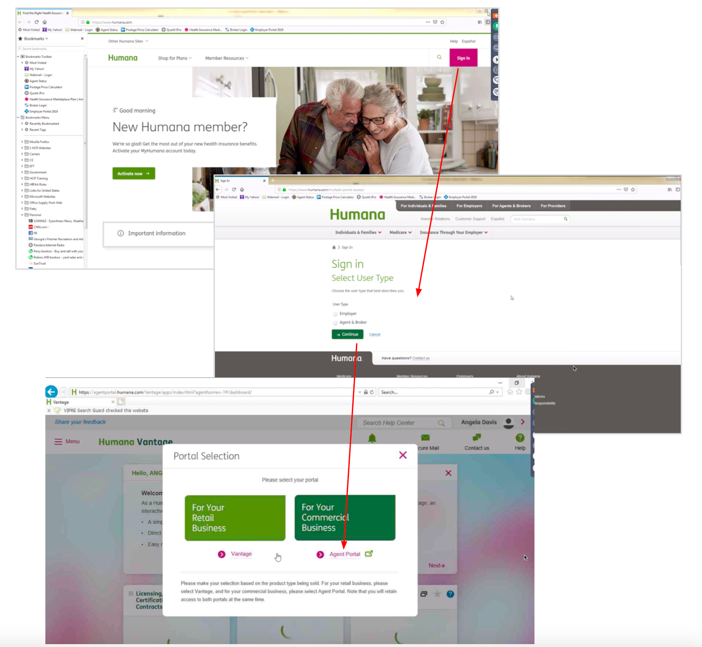

Working at Humana was my first ever experience as a UX Designer in an enterprise setup. It was during this period that I gained invaluable experience collaboarting with cross-functional teams. Working closely with a UX researcher, content writer, product manager, and developers in an agile setting, I learned the significance of aligning with all team members at every step of the design process.
Between 2018 and 2021, I worked on several projects at Humana. However, this project held particular significance for me. I led the design of this application from the ground up. I was there right from the project's inception, making it an exceptional and memorable experience in my career journey.
Agent Portal is an interactive dashboard for Humana’s insurance agents, designed to streamline their daily tasks and provide access to tools and resources to help drive sales and manage the business.
Challenges and Goals
- Identify the most important tasks performed by the agents daily
- Identify user’s pain points in completing these tasks
- Design a solution that enables them to complete these tasks efficiently
- Implement Humana’s new design system in the application
- Measure the outcome and user satisfaction of the new solution
Research
To understand the key tasks of an agent and identify their pain points, I collaborated with the UX researcher on our team and conducted field interviews and surveys with 20 agents. The takeaways were:
Agent's Key Tasks
- Manage policies, quotes, enrollment, and payments of individual customers and employer/employee customers
- Create quotes for new and existing customers
- Present marketing materials of Humana’s insurance plans and offers to potential and existing customers
- Contact the Humana sales team for customer help and support
Identifying Pain Points
Problem 1: Links to external applications
Humana’s lack of a single system of records causes transparency concerns for agents/brokers and requires the sales team to use manual logs of customer information.
Problem 2: Inconsistent and Outdated UI
Problem 3: Customer Listing page
We found out that the Customer Listing page has usability issues resulting in not communicating information.
Problem 4: No seamless transition between portals with clear & prominent links without additional login requests.

Designing Solutions
Solution 1: Build a one-stop application for Agents which enables them to perform all their major tasks on one platform thereby improving the efficiency of tasks and consistency of data.
After identifying the major user tasks I created task flows and reunited with the team to take approval from them. The next step was to create wireframes and rough sketches of the screens to test these flows with the users.

As you can see, all the major tasks such as quoting, enrollment, managing customers, and payments can be performed using the newly designed solution. The goal was to provide them access to information in the fastest way possible. That’s why after continuous iterations I decided to classify and provide links to the major tasks clearly on the homepage.
Solution 2 : Consistent UI with Brand Standards
Solution 3 : Improved usability with the new employer account listing page
Solution 4 : Ability to switch portals using single sign-on
The 'Switch portals' dropdown helps the users navigate directly to the other portals vis-a-vis asking the user to go back to the humana.com page and log in to a different portal.
Measure Outcome
Through several rounds of user testing with the same set of 20 agents, I found out that there was 100% satisfaction amongst the agents and the time to complete the above-listed major tasks was reduced by an average of 15 seconds (45%) with a 100% efficiency in data.